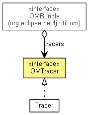

org.eclipse.net4j.util.om.trace
Interface OMTracer
- All Known Implementing Classes:
- Tracer
public interface OMTracer

- No Implement
- This interface is not intended to be implemented by clients.
- No Extend
- This interface is not intended to be extended by clients.
getBundle
OMBundle getBundle()
getParent
OMTracer getParent()
getName
String getName()
getFullName
String getFullName()
isEnabled
boolean isEnabled()
setEnabled
void setEnabled(boolean enabled)
trace
void trace(OMTraceHandlerEvent traceRecord)
format
OMTraceHandlerEvent format(Class<?> context,
String pattern,
Object... args)
format
OMTraceHandlerEvent format(Class<?> context,
String pattern,
Throwable t,
Object... args)
trace
OMTraceHandlerEvent trace(Class<?> context,
String msg,
Throwable t)
trace
OMTraceHandlerEvent trace(Class<?> context,
String msg)
trace
OMTraceHandlerEvent trace(Class<?> context,
Throwable t)
tracer
OMTracer tracer(String name)
Copyright (c) 2004 - 2011 Eike Stepper (Berlin, Germany) and others.